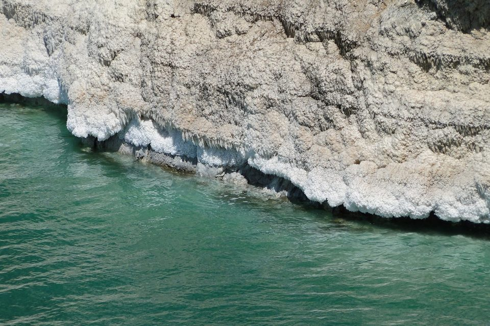

Jordan · Dead Sea
The Dead Sea audio guide
5 stops · 9 min
Billed in ZAR
Unlocks in this browser after payment.
Float at the lowest place on Earth. Listen here, or get the Earwise app to play it offline as you walk.
Stops
- 1
The lowest place on Earth
On the shore at Amman Beach, or any beach on the northern Jordanian shore, at the water's edge. This is stop 1 on the route.
Play0:00 / –:––Read along
Notice how thick and warm the air feels. You are standing on the lowest dry land on Earth. The surface of the water in front of you lies more than four hundred and thirty metres below sea level, a level that fell sharply across the twentieth century.
This lake sits in a long crack in the Earth's crust, the Jordan Rift Valley, where two great plates of rock are sliding past each other. Rivers flow in, the Jordan above all, but no river flows out. The only way for water to leave is to evaporate under the fierce sun, and as it goes, it leaves its salt behind. Over thousands of years, that has made one of the saltiest bodies of water in the world: around ten times saltier than the ocean.
Very little can live in it, which is why it has been called the Dead Sea for two thousand years and more, in Greek, in Latin and in Arabic, where it is al-Bahr al-Mayyit. The Bible knows it by older names: the Salt Sea, the Sea of the Arabah, the Eastern Sea. Arab writers also called it the Sea of Lot, after Abraham's nephew.
Look across the water. The hills on the far side are the West Bank. On a clear day you can see their bare cliffs falling to the shore. Behind you rise the mountains of Moab, the same heights where Moses stood on Mount Nebo.
- 2
You cannot sink
At the water's edge, ready to float, or watching others float. This is stop 2 on the route.
Script and audio included when you buy - 3
Black mud and asphalt
On the shore, by the mud pots or the darker shoreline. This is stop 3 on the route.
Script and audio included when you buy - 4
The view from the Panorama
On the terrace of the Dead Sea Panorama Complex, high on the cliffs of the Zara mountains. This is stop 4 on the route.
Script and audio included when you buy - 5
Lot's Cave and the monastery of Deir 'Ain 'Abata
At the ruins of the Byzantine church on the mountainside above Ghor al-Safi, beside the mouth of Lot's Cave. This is stop 5 on the route.
Script and audio included when you buy
On the map
All 5 stop pins for this guide are marked. Open map